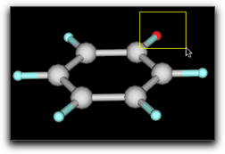
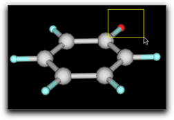

Step Eleven: Using Embedded Ruby Interpreter
One of the most useful features of Molby is the embedded Ruby interpreter. When working on molecular modeling, it is often necessary to modify the model according to some mathematical relations. It is also convenient if we can extract some molecular information by automated "scripts" (i.e. computer programs), and export as a text file that can be processed by graphing software. The embedded Ruby interpreter is very useful under these circumstances. Actually, many functions of Molby itself are implemented by Ruby scripts.
To use the embedded Ruby interpreter in Molby, you need to be familiar with the Ruby programming language. You can find several good on-line tutorials in the Internet. However, you can also get the idea by going through the following sections.
1. Using the Ruby Console
The Ruby console window is open when Molby starts up.
On this window, you can execute Ruby scripts in an interactive manner. Let us try something on it now. Make the console window active by clicking on it, and type "1+2" followed by hitting the Return key. You will find this:
% 1+2
--> 3
%
The Ruby interpreter calculated "1+2", and displayed the answer (3) in the following line.
You can give a longer expression including parenthesis.
% (13.0*13.0+7.0*7.0)/1.365
-->159.70695970696
%
Or use common mathematical functions.
% exp(-2.0) * (sin(0.25) + cos(0.25))
-->0.1646105219232536
%
Usually in Ruby, you need to say Math.exp or Math.sin when using these mathematical functions. In Molby, the prefix Math is not necessary, because Molby automatically "includes" the Math module on startup.
You can also use Strings, which is a series of characters.
% "C" + "32"
-->"C32"
%
The "32" here is not a number but a string, because it is surrounded by quotation marks. If you omit these quotation marks, what happens?
% "C" + 32
Molby complains with this error dialog. It says "in '+': can't convert Fixnum into String," which means the integer 32 cannot be added to a string "C". Such kind of "type mismatch" error occurs very often, so please get used to it and learn how to fix it.
Another useful feature of Ruby is an Array, which is an ordered collection of other Ruby objects. An array is expressed by comma-separated values surrounded by a pair of brackets.
% [1, 2, 3]
-->[1, 2, 3]
%
Any Ruby object can be stored in a variable. The name of variables should begin with a lowercase alphabet and should consist of alphabets, number characters and underline "_".
% a = ["apple", "orange", "grape"]
-->["apple", "orange", "grape"]
% a[0]
-->"apple"
2. How to Handle Molecules in Molby Scripts
The examples so far used only built-in types (Integer, String, Array) in Ruby, but you will definitely need to handle Molecules from your Molby scripts. Suppose we have a benzene molecule (again).
What if you want to convert it to chlorobenzene? There are two GUI ways; double-click on the H1 atom, and enter "Cl" into the dialog box, or double-click on the "H" text in the "element" column of the property table and change it to "Cl". But there is also a "Ruby" way, as follows:
% atoms[1].element = "Cl"
-->"Cl"
%
This short piece of code implies some important concepts for coding in Molby. First, atoms denotes the atoms in the current molecule, which is the molecule in the frontmost window (except for the console window). atoms is not really an Array (as in the Ruby terminology), but can be used in a similar way as Array in many aspects. Specifically, it can be "indexed" to extract a specific atom.
atoms[i]
Please make sure to say atoms[i], not atom[i]. This may be confusing, but it is because atoms is a collection of atoms and [] denotes "extraction of the i-th element."
The second point in the above example is .element = "Cl". In Ruby, a period (.) followed by a word (element) indicates a "method call." Method is a technical term in Ruby programming language; it is a function that is specific to an object. In this case, atoms[1] is an object, and it has a method named element= (including the last equal sign) whose meaning is "to change the element as indicated by the string value in the right side." In this way, the script atoms[1].element = "Cl" causes the element of the atom 1 changed to chlorine.
What if you want to change all hydrogen atoms to chlorine? Here is the code:
% natoms.times { |i| if atoms[i].element == "H"; atoms[i].element = "Cl"; end }
-->12
%
This is far more complicated than the previous example. A step-by-step explanation follows.
natoms gives the number of atoms in the current molecule as an integer number. This is actually a method call (natoms is a method of a Molecule object). Why a method is called even though no period is preceding the word? It is because Ruby has a feature called "implicit method call." This will be explained in more detail later.
natoms
times is a method of Integer (which is a built-in class of Ruby), which causes the following code surrounded by a pair of braces to be repeated the given number of times.
natoms.times { ... }
The code within the braces is called "block" in Ruby terminology.
In the repeated code (or "block"), it is very likely that you want to know "how many times have I repeated?" This is achieved by declaring a variable name at the top of the block, surrounded by two vertical bars.
natoms.times { |i| ... }
The following piece of codes is often used for testing. (puts prints the arguments to the console.)
% natoms.times { |i| puts i }
0
1
2
3
4
5
6
7
8
9
10
11
-->12
The "12" in the last line is the "result value" of the method times, and the numbers 0 to 11 are the outputs from the puts method. Now you can see the block was executed 12 times with changing the variable i from 0 to 11.
In the block, there is an if statement:
if atoms[i].element == "H"; atoms[i].element = "Cl"; end
The if statement has the following general form:
if <condition>; <statements>; end
The <condition> is evaluated first, and if it is "true", the <statements> are executed; otherwise the <statements> are skipped.
Note: Ruby interprets only false and nil as non-true values. Other values are all "true". Specifically, the number 0 (zero) and an empty string ("") are evaluated to "true" (this is unlike other programming language such as Perl). Many Ruby methods returns nil in case of failure; such methods are suitable for the condition part.
Finally, the element method in the following code is different from the element= method that we previously used:
atoms[i].element == "H"
In this case, the following symbol is "==", which means "are these equal?". This is distinct from the symbol "=", which means "the right side is assigned to the left side." The element symbol is interpreted as the element= method only when it is followed by the assignment symbol "=". The above code is not the case, so that it is interpreted as the element method, which returns the present element symbol as a String.
After execution of the script, the molecule should look like this:
3. About the "Implicit" Method Call
In the preceding section, we saw that natoms was a method of a Molecule object.
natoms
Why this symbol natoms is regarded as a method call? Actually, when the Ruby interpreter finds a symbol beginning with a lowercase alphabet, it looks for a (local) variable first, and if none is found, then it assumes that the symbol is a method belonging to the "current object". Since Ruby is an object-oriented language, there is always a "current object", which is denoted as self. We can see it on our console:
% self
-->Molecule["unnamed1"]
%
This piece of code indicates that the "current object" is a Molecule object. In fact, the Molecule object corresponding to the frontmost window becomes the "current object" when a script is executed on the Molby console.
When no molecule is open, the "current object" is "main", which is the standard toplevel object in Ruby.
Sometimes you happen to define a variable with the same name as a method of Molecule. In that case, access to the variable is preferred and the method is no longer called.
% natoms = 2
-->2
% natoms
-->2
%
In this situation, you can explicitly request a method call by specifying self.
% self.natoms
-->12
%
A special case is the methods with the assignment symbol ("="). For example, a method show_hydrogens= can control whether the hydrogen atoms are shown or not. However, without specifying self, the expression is always regarded as the assignment to a local variable. Therefore, self should be always explicitly given.
% show_hydrogens = false
-->false
% self.show_hydrogens = false
-->false
%
4. Executing a Ruby Script on a File
From the Ruby console, you can only execute a one-line script. For more complex scripts, or if you want to use the script many times over, it will be more convenient to store the script in a file and execute it. The "Execute Script..." command in the "Script" menu does this job.
There are endless possibilities for the script; here are presented only a few examples. The first script is to create a table of bond lengths including metal atoms (Fe):
fp = open("bond_table.txt", "w")
atoms.each { |ap|
if ap.element == "Fe"
r1 = ap.r
ap.connects.each { |n|
ap2 = atoms[n]
r2 = ap2.r
d = (r - r2).length
fp.printf "%s-%s %.3f\n", ap.name, ap2.name, d
}
end
}
fp.close
Save this text to a file, select "Execute Script..." command (be sure that the target molecule is on the front), and choose the script file. After execution, a file named "bond_table.txt" will be generated in the same directory as the script file.
Here is another example, which works on a MD trajectory. For each frame, the molecule is reoriented so that the atom 0 is at the origin and atoms 1 and 2 are on the xy plane (with the atom 1 on the x-axis), and calculate the center of mass of the atoms 6 to 11. Such processing is useful to visualize how a particular part of the molecule moves around throughout the MD run.
fp = open("extract_group.txt", "w")
each_frame { |n|
rotate_with_axis(1, 2, 0)
r = center_of_mass(6..11)
fp.printf "%d %.6f %.6f %.6f\n", n, r.x, r.y, r.z
}
fp.close
The last example generates a model of carbon nanotube with any chirality and length as you like.
r = 1.42
n = 10
m = 5
aspect = 5.0
k = aspect / (PI * sqrt(3.0))
points = []
delta = 2 * k * (n * n + m * m + n * m)
(0..(k * (n + 2 * m) + n).ceil).each { |s|
((-k * (2 * n + m)).floor..m).each { |t|
[0, 2.0/3.0].each { |d|
ss = (k * (2 * n + m) * (s + d) + k * (n + 2 * m) * (t + d)) / delta
tt = (m * (s + d) - n * (t + d)) / delta
if ss >= 0.0 && ss < 1.0 && tt >= 0.0 && tt <= 1.0
points.push([ss, tt, s, t])
end
}
}
}
rad = sqrt(3.0) * r * sqrt(n * n + m * m + n * m) / (2 * PI)
len = rad * 2 * aspect
mol = Molecule.new
points.each { |p|
ap = mol.create_atom
ap.element = "C"
ap.atom_type = "ca"
ap.r = [rad * cos(2 * PI * p[0]), rad * sin(2 * PI * p[0]), len * p[1]]
}
mol.guess_bonds
mol2 = Molecule.open
mol2.add(mol)
5. Where to Go from Here
The embedded Ruby capability is very strong, and cannot be fully explained in this short tutorial. If you are interested, read carefully the reference of the Ruby extension. There are also many scripts in the Molby application, which you can examine by opening the "Scripts" folder (which is within the Application package in Mac OS X, and in the same folder as the Molby application in Windows).
第十一段階：組み込み Ruby インタプリタを使う
Molby の最も有用な機能の１つは、内蔵の Ruby インタプリタです。分子モデリングを行うとき、ある数学的な規則に従ってモデルを変更したいことがしばしばあります。また、分子のある種の情報を自動化された「スクリプト」（コンピュータプログラム）で抽出してテキストとして書き出し、グラフ描画ソフトウェアで処理することも有用です。内蔵 Ruby インタプリタは、このような場合に威力を発揮します。実は、Molby の機能の多くの部分は Ruby スクリプトで実装されているのです。
Molby の内蔵 Ruby インタプリタを使うためには、プログラミング言語 Ruby の知識が必要です。インターネット上で良いオンラインチュートリアルを見つけてください。もっとも、以下の解説を読めば、ある程度のイメージはつかめるでしょう。
1. Ruby コンソールを使う
Molby が起動すると、Ruby の「コンソールウィンドウ」が開きます。
このウィンドウ上で、Ruby スクリプトを対話的に実行することができます。いくつか試してみましょう。コンソールウィンドウをクリックしてアクティブにして、"1+2"、続いてリターンキーをタイプしてください。次のようになります。
% 1+2
--> 3
%
Ruby インタプリタが "1+2" を計算し、答え (3) を次の行に表示したところです。
カッコを含む長い式も計算できます。
% (13.0*13.0+7.0*7.0)/1.365
-->159.70695970696
%
数学関数も使うことができます。
% exp(-2.0) * (sin(0.25) + cos(0.25))
-->0.1646105219232536
%
通常 Ruby では、これらの数学関数を使うときには Math.exp, Math.sin のように書かなくてはなりません。Molby では、Math という接頭辞は必要ありません。これは Molby が起動時に Math モジュールを "include" するためです。
文字列 (Strings) を使うこともできます。
% "C" + "32"
-->"C32"
%
ここの "32" は数ではなく文字列です。引用符で囲まれているからです。引用符を省略するとどうなるでしょう？
% "C" + 32
Molby はエラーメッセージ "in '+': can't convert Fixnum into String" を表示します。これは、「整数」32 を「文字列」"C" に足すことはできないことを意味しています。このような「型が違う」エラーはとてもよく起きるので、どのように直せばいいかをよく理解しておいてください。
Ruby のもう１つの便利な機能は「配列」(Array) です。これは、他の Ruby オブジェクトを順番に並べたものです。配列は、値をコンマで区切って角括弧 [] で囲むことで表します。
% [1, 2, 3]
-->[1, 2, 3]
%
Ruby のオブジェクトは「変数」に格納することができます。変数の名前は、小文字のアルファベットで始まり、数字またはアルファベット ("_" を含む) の並びでなくてはなりません。
% a = ["apple", "orange", "grape"]
-->["apple", "orange", "grape"]
% a[0]
-->"apple"
2. Molby スクリプトで分子を扱う
ここまでの例では、Ruby の組み込み型 Integer, String, Array を使ってきましたが、Molby スクリプトでは「分子」を扱うことが必要になります。ベンゼン分子があるとしましょう。
これをクロロベンゼンに変えたいとします。グラフィックインターフェイスでは２つのやり方があります。H1原子をダブルクリックしてダイアログボックスに "Cl" と入力するか、属性テーブルの "element" のセルで "H" を "Cl" に変えます。これを Ruby スクリプトで行うには、次のようにします。
% atoms[1].element = "Cl"
-->"Cl"
%
この短いコードに、Molby でのコーディングの重要な技法が含まれています。まず、atoms は「現在の分子」（コンソールウィンドウを除いて最も手前側にあるウィンドウの分子）に含まれる原子の並びを表します。atoms は Ruby の配列 (Array) ではありませんが、多くの点で配列と同じように使うことができます。特に、「添字」をつけて特定の原子を指定することができます。
atoms[i]
atom[i] ではなく atoms[i] であることに注意してください。混乱しますが、これは atoms が原子の並びで [] が「…番目の要素を取り出す」という機能を表すためです。
次は .element = "Cl" です。Ruby では、ピリオド (.) に続けて単語 (element) を書くと、「メソッド呼び出し」になります。「メソッド」とはプログラミング言語 Ruby の用語で、ある対象（オブジェクト）に固有の動作を指します。この場合は、atoms[1] がオブジェクトで、element= という名前のメソッドを持っています（最後の '=' を含みます）。このメソッドは、「その原子の元素記号を右辺の文字列で表されたものに変える」という働きをします。このようにして、スクリプト atoms[1].element = "Cl" は、原子１の元素記号を Cl に変えます。
もし、全部の水素原子を塩素に変えたいとしたらどうでしょう？ 次のようにします。
% natoms.times { |i| if atoms[i].element == "H"; atoms[i].element = "Cl"; end }
-->12
%
これは前の例よりずっと複雑です。ステップごとに説明していきます。
natoms は、現在の分子の原子数を整数で返します。これは実はメソッド呼び出しで、Molecule 型オブジェクトのメソッド natoms を呼んでいます。ピリオドがないのにメソッドが呼び出されているのはなぜでしょう？ これは Ruby 言語の仕様に、「暗黙のメソッド呼び出し」があるためです。あとでもう少し詳しく説明します。
natoms
times は、Integer （これは Ruby の組み込み型です）のメソッドです。その後ろの中括弧 {} で囲まれたコードを、指定した回数実行します。
natoms.times { ... }
中括弧で囲んだコードを Ruby の用語で「ブロック」と呼びます。
繰り返すコード（ブロック）の中で、「今実行しているのは何回目？」かを知りたいことがあります。このためには、ブロックの先頭で、２本の縦棒 "|" で囲んで変数を指定します。
natoms.times { |i| ... }
次のようなコードがテストのためによく使われます。(puts は与えられたオブジェクトをコンソールに出力します。)
% natoms.times { |i| puts i }
0
1
2
3
4
5
6
7
8
9
10
11
-->12
最後の行の "12" は、times メソッドの「戻り値」です。その上の 0 から 11 の数は、puts メソッドからの出力です。ブロックが 12 回実行され、変数 i が 0 から 11 まで変化したことがわかりますね。
ブロックの中には、if 文があります。
if atoms[i].element == "H"; atoms[i].element = "Cl"; end
if 文の一般形は次の通りです。
if <条件>; <実行文>; end
まず <条件> が評価されます。それが「真」ならば、<実行文> が実行されます。条件が「真」でなければ、<実行文> はスキップされます。
注: Ruby は false と nil だけを「真でない」値とします。その他の値はすべて「真」です。特に、数値の 0（ゼロ）と空の文字列 ("") も「真」となります（これは Perl などの他のプログラミング言語とは異なります）。多くの Ruby メソッドは、失敗したときに nil を返します。これらのメソッドは条件部分にそのまま使えます。
最後に出てくる element メソッドは、先に出て来た element= メソッドとは違います。
atoms[i].element == "H"
この場合は、element の次に来る記号は "==" で、これは「２つの値は等しいか？」という意味です。この記号は "=" とは違います。後者は「右辺を左辺に代入する」という意味です。element という記号は、その次に "=" 記号が来るときに限って、"element=" メソッドとして解釈されます。この場合はそうではないので、element メソッドが呼び出されます。このメソッドは、現在の元素記号を String （文字列）として返します。
スクリプトを実行したら、分子は次のようになるはずです。
3. 暗黙のメソッド呼び出し
前の節で、natoms は Molecule オブジェクトのメソッドであることを学びました。
natoms
なぜこの natoms はメソッド呼び出しと見なされるのでしょう？ 実は、Ruby インタプリタ（Ruby スクリプトを実行するプログラム）は小文字のアルファベットで始まる単語を見つけると、まず変数（ローカル変数）を探し、それが見つからなければ「現在のオブジェクト」に属するメソッドであると見なすのです。Ruby は「オブジェクト指向言語」なので、Ruby スクリプトの実行中は必ず「現在のオブジェクト」が存在しています。これを self と呼びます。コンソールで試してみましょう：
% self
-->Molecule["unnamed1"]
%
この結果は、「現在のオブジェクト」が "unnamed1" という分子を表す Molecule オブジェクトであることを示しています。Molby コンソールでスクリプトを実行する時は、最前面にあるウィンドウの分子に対応する Molecule オブジェクトが「現在のオブジェクト」になります。
分子のウィンドウが１つも開いていない時は、現在のオブジェクトは main になります。これは Ruby 起動時の「現在のオブジェクト」と同じものです。
ときどき、Molecule が持つメソッド名と同じ名前の変数を作ってしまうことがあります。この場合、変数へのアクセスが優先されますので、メソッドを呼び出すことはできなくなります。
% natoms = 2
-->2
% natoms
-->2
%
この場合でも、self を指定すればメソッドを呼び出すことができます。
% self.natoms
-->12
%
特に注意が必要なのは、代入記号 ("=") を持つメソッドです。例えば、show_hydrogens= というメソッドは、水素原子を表示するかどうかを指定するものです。しかし、self を使わないと、ローカル変数への代入になってしまいます。従って、この場合は常に self を指定する必要があります。
% show_hydrogens = false
-->false
% self.show_hydrogens = false
-->false
%
4. ファイル上の Ruby スクリプトを実行する
Ruby コンソール上では、１行のスクリプトしか実行できません。もっと複雑なスクリプトを実行したい時や、同じスクリプトを何度も実行したい時は、ファイルにスクリプトを格納して実行する方が便利です。"Script" メニューの "Execute Script..." コマンドでこれが実現できます。
スクリプトには無限の可能性があります。いくつかの例をここに示します。最初のものは、「鉄原子を含む結合長のテーブルを作る」スクリプトです。
fp = open("bond_table.txt", "w")
atoms.each { |ap|
if ap.element == "Fe"
r1 = ap.r
ap.connects.each { |n|
ap2 = atoms[n]
r2 = ap2.r
d = (r - r2).length
fp.printf "%s-%s %.3f\n", ap.name, ap2.name, d
}
end
}
fp.close
このテキストをファイルに保存し、"Execute Script..." コマンドを実行し（目的の分子が一番前のウィンドウに表示されていることを確かめて）、スクリプトファイルを選びます。実行後、"bond_table.txt" というファイルが、スクリプトファイルと同じディレクトリに作成されています。
次の例は、MD トラジェクトリを処理するものです。各フレームに対して、原子 0 が原点、原子 1, 2 が xy 平面上（原子 1 が x 軸上）に来るように分子を再配向して、原子 6 から 11 の重心を計算します。このような処理は、MD の結果分子のある部分がどのように動くかを可視化するのに便利です。
fp = open("extract_group.txt", "w")
each_frame { |n|
rotate_with_axis(1, 2, 0)
r = center_of_mass(6..11)
fp.printf "%d %.6f %.6f %.6f\n", n, r.x, r.y, r.z
}
fp.close
最後の例は、任意のキラリティ・長さのカーボンナノチューブのモデルを作成するスクリプトです。
r = 1.42
n = 10
m = 5
aspect = 5.0
k = aspect / (PI * sqrt(3.0))
points = []
delta = 2 * k * (n * n + m * m + n * m)
(0..(k * (n + 2 * m) + n).ceil).each { |s|
((-k * (2 * n + m)).floor..m).each { |t|
[0, 2.0/3.0].each { |d|
ss = (k * (2 * n + m) * (s + d) + k * (n + 2 * m) * (t + d)) / delta
tt = (m * (s + d) - n * (t + d)) / delta
if ss >= 0.0 && ss < 1.0 && tt >= 0.0 && tt <= 1.0
points.push([ss, tt, s, t])
end
}
}
}
rad = sqrt(3.0) * r * sqrt(n * n + m * m + n * m) / (2 * PI)
len = rad * 2 * aspect
mol = Molecule.new
points.each { |p|
ap = mol.create_atom
ap.element = "C"
ap.atom_type = "ca"
ap.r = [rad * cos(2 * PI * p[0]), rad * sin(2 * PI * p[0]), len * p[1]]
}
mol.guess_bonds
mol2 = Molecule.open
mol2.add(mol)
5. 次に学ぶべきこと
組み込み Ruby インタプリタは非常に強力であるため、この短いチュートリアルでは説明しきれません。興味があるなら、Ruby 拡張のリファレンス に目を通してください。また、Molby アプリケーション本体にはたくさんの Ruby スクリプトが内蔵されています。"Scripts" フォルダを参照してください（Mac OS X では Molby アプリケーションパッケージの中、Windows では Molby アプリケーションと同じフォルダにあります）。

 
